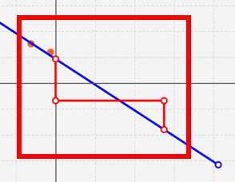

Overview
The purpose of this portfolio is to document my contributions to PalPay, a software engineering project under the module CS2103T - Software Engineering. PalPay is a personal finance management application developed by a team of 5 students taking the module, including myself. It is mostly written in Java and has roughly 15,000 Lines of Code (LoC). Being a Command Line Interface (CLI) application, it is controlled mainly through the Command Line in the app, while displaying output through a Graphical User Interface (GUI) written in JavaFX.
My main role within the team was to implement the Projection feature, which utilizes a machine learning algorithm to predict the user’s account balance and budget statuses at a specified point of time in the future. I was also in charge of implementing the Display feature, which further enhances the Projection feature by providing users with a graphical representation of their balance and budget states.
Summary of contributions
-
Code contributed: My contributions to PalPay can be viewed here - RepoSense
-
Major enhancement: Implemented the
Projectionfeature, along with various functions associated with it.-
What it does:
-
Uses the Gradient Descent algorithm to project the user’s account balance in the future
-
Allows users to predict whether they will meet their budget goals based on past income/outflow trends
-
-
Justification: While most finance tracking applications have relatively robust income/outflow tracking functions, few offer the ability to project future financial states - something which is sorely needed for effective financial planning
-
Highlights: By utilizing the Gradient Descent algorithm, the
Projectionfeature is guaranteed to find the best-fit projection line graph based on past transactions, with an extremely minute error tolerance (= 1E-11). The feature also automatically adjusts all relevant projections whenever transactions or budgets are added, deleted or updated, offering considerable convenience to the user, who thus does not need to update them manually.
-
-
Minor enhancement: Developed the
displayfeature, which offers an elegant, graphical representation of the user’s projections. -
Other contributions:
-
Project management:
-
Enhancements to existing features:
-
Refactor
AddressBookintoBankAccountandAddCommandintoInCommand, such that PalPay had its first entry point. (Pull requests: #27) -
Refactor various JSON-adapted files and enabled PalPay’s
Storagefunctionality. (Pull request: #27) -
Extended Java’s in-build Date class to support parsing and comprehensive checking, which currently supports all commands in PalPay (Pull request: #86)
-
-
Documentation:
-
Wrote comprehensive documentation for the following commands in both the User Guide and the Developer Guide:
-
project -
display
-
-
Created UML diagrams to help in the explanation of the
projectanddisplaycommands in the Developer Guide.
-
-
Community:
-
Reported bugs and suggestions for other teams in the module. (Examples: W13-4 #147, W13-4 #148, W13-4 #149, )
-
-
Contributions to the User Guide
Given below are sections I contributed to the User Guide. They showcase my ability to write comprehensive and concise documentation for non-technical users. |
Projecting Future Balance and Budgets : project
Cast a projection on your future balance amount and budget statuses based on your transaction history.
Format: project d/DATE [c/CATEGORY]
If a CATEGORY is not specified, it will be set as GENERAL by default. GENERAL projections project
upon ALL transactions, regardless of their categories.
|
Example Usage
-
project d/22072020Projected balance: $955.80
-
project d/01012020 c/FoodProjected balance: $188.04 You are on track to meeting your budget of $600 by 08122019, with a surplus of $484.32!
Usage Constraints
Command Format
-
CATEGORYmust be preceded by its tagc/. A violation of any of the above will produce the following error message:
Date Values
-
DATEinput must be set in the future. A violation of this constraint will produce the following error message:
-
DATEcannot be more than 720 days from the day of projection.
A violation of this constraint will produce the following error message:
Minimum Number of Transactions
-
There must be a minimum of 5 transactions in total, or in the specified
CATEGORYfor a projection to be successfully cast. Should the requirement above be unmet, the following error message will be produced:
-
Should the number of transactions in a
projectionfall below 5, it will be automatically deleted, as shown below:-
Suppose there are 5 transactions, and a
GENERALprojection, which projects upon them.Figure 1. Five transactions under the projection tabFigure 2. A projection which is cast based on the 5 transactions above -
If a transaction being deleted causes the number of transactions being projected upon to fall below 5, the corresponding projection will automatically be deleted.
 Figure 3. The fifth transaction has been deleted.
Figure 3. The fifth transaction has been deleted. Figure 4. The project earlier seen in Figure 19 has been automatically deleted.
Figure 4. The project earlier seen in Figure 19 has been automatically deleted.
-
Valid Budget Start Dates and Deadlines
A projection will only project upon budgets with deadlines set before or equal to the projection DATE. An example
is depicted below:
-
Suppose there is currently a general Budget with a deadline set for 28th November 2019
Figure 5. Two Budgets with dates 20112019 and 28112019 in the "GENERAL" category -
If a general Projection is cast to 20th November 2019, it will contain the Budget with deadline 20112019 but not 28112019, since the projection’s
DATEis earlier than 28112019.Figure 6. The Projection only contains the Budget with deadline 20112019
Backward Projections
While it is possible in PalPay, projecting your balance amount backwards in time is not guaranteed to produce sensible results. It is generally not advisable to do so.
Display a Projection Graph: display
Display a graphical representation of a Projection in a new window.
Format: display PROJECTION_ID
Example Usage
-
Type display PROJECTION_ID into the command box and press Enter. For instance:
-
A new window containing a graphical representation of the specified projection will pop up.
If there are any budgets associated with the projection, a corresponding graphical representation of the budget will be additionally displayed.

Interpreting the Projection graph
-
The X-Axis
The X-Axis denotes your balance in dollars ($). -
The Y-Axis
The Y-Axis denotes the number of days from now, with today being Y = 0. -
Red Points
The red points on the graph each represent your account balance (denoted by the X-value) at a particular point of time (denoted by the Y-value). -
Blue Line Graph
The blue line graph represents the projection line, with each point along it representing a prediction of your account balance (denoted by the X-value) at a certain point of time (denoted by the Y-value). -
All Other Coloured Line Graphs
All other coloured line graphs represent various budgets which fall within theCATEGORYandDATErange of thePROJECTION. Each of these line graphs have three parts:
Usage Constraints
Valid Projection Index
-
A
ProjectionwithPROJECTION_IDmust exist. Attempting to display a non-existentPROJECTIONwill result in the following error message:
Static Graph Rendering
-
Projectiongraphs do not update automatically when a newTransactionorBudgetis added or removed. Instead, they are statically rendered upon thedisplaycommand.Due to the static nature of projection graphs, commands should NOT be executed while a projection graph is open, lest the behaviour of PalPay become unpredictable.
Consequently, adisplaycommand should ALWAYS be followed by closing the projection graph window, before any other actions are performed within PalPay.
Contributions to the Developer Guide
_Given below are sections I contributed to the Developer Guide. They showcase my ability design and implement complex features through code, as well as my technical competencies in Java. |
Project Feature: project
This feature allows users to project their balance amount and budget statuses based on past income and outflows as manifest in their
TransactionHistory by using the command project DATE [CATEGORY].
Current Implementation
The project command is facilitated by the Logic and Model components of the application, PalPay.
The sequence diagram below demonstrates how the project DATE [CATEGORY] command is handled by the application.
If a CATEGORY is not specified by the user, it will be set as GENERAL by default.
Projection by Date
When projecting by date alone, all transactions in the user's transaction list will be taken into account,
regardless of their categories. On the other hand, only budgets without categories (thus belonging to the
GENERAL category by default) will be projected upon.
Projection by Date and Category
When projecting by date and category, all transactions tagged by the specified category will be taken into account. Similarly, all budgets tagged with the specified category will be projected upon.
Budget Projections
Projections on budgets are made by first projecting the user's balance amount at the point when the budget was set. Then, it compares the user's projected balance amount at the point of the budget’s deadline, with the budget’s amount. A surplus is indicated when the former is greater than the latter, and a deficit is indicated when the former is smaller than the latter. ===== Activity Diagram
The activity diagram below depicts how a projection is made.
Graphical Representation
A graphical representation of the user's projections may be rendered using the display command.
Future Enhancements
Polynomial Regression
For simplicity of logic and design, the current implementation performs linear regression (via gradient descent),
projecting user balance and budget states using a best-fit straight line. Ultimately, income and spending trends
may not be best represented by a straight line, but rather by a polynomial equation. In future updates, the projection
feature will choose a value, n, and perform a n-th degree polynomial regression, such that the user’s balance
and budget states can be more accurately projected.
| Currently, the GradientDescent class implements feature scaling and mean normalisation. Although this is not entirely necessary for the current implementation (which uses linear regression), it is meant for optimizing polynomial regression in future updates. |
Normal Equation
Currently, the gradient descent algorithm is used to plot the projection graph, which is used for predicting the user's balance and budget states at specified point in time. For smaller data sets, analytically computing the normal equation to find the best-fit line graph may have result in a faster runtime. In future updates, the normal equation method will be used in place of the gradient descent algorithm, for projections with less than a set number (e.g. 500) of transactions.
Display Feature: display
This feature provides a graphical view of an existing projection to the user.
Current Implementation
The following activity diagram depicts how the display command is executed.

For a more concrete illustration of how the display command is handled by PalPay,
a sequence diagram is provided below.